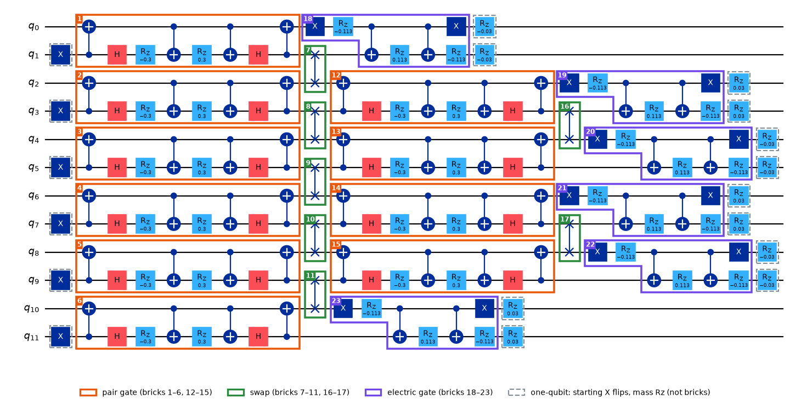

Learn · hadron circuit · brickwork, part 0
Map of the whole step before the gate-by-gate pages. 12 qubits, current circuit: kinetic 0.30, electric −0.226125, mass 0.03 (sign per site).

One Trotter step, 6 sites = 12 qubits, current values, vacuum start (the hadron start flips 4 different qubits in the middle). Drawn by hadron-aqc/notebooks/draw_brickwork.py straight from construct_circuit; the earlier picture is brickwork_annotated_old.png. The full circuit (the T11 file) repeats this step 11 times.
Order, left to right: starting X flips → pair gates (bricks 1–6) → SWAPs (7–11) → pair gates (12–15) → SWAPs (16–17) → electric gates (18–23) → mass Rz turns.
| gate | bricks | CNOTs each | changes bits? | what it does |
|---|---|---|---|---|
| pair gate | 1–6, 12–15 | 4 | yes | a particle hops between neighbours (kinetic strength 0.30) |
| SWAP | 7–11, 16–17 | 3 | only moves them | brings new neighbours together for the next pair gates; no physics |
| electric gate | 18–23 | 2 | no, phase only | energy of the electric field (the string) on one site |
| mass Rz | — (one-qubit) | 0 | no, phase only | energy cost of a particle on a site |
Per step at 12 qubits: 10 pair + 7 SWAP + 6 electric = 73 CNOTs (40 + 21 + 12), before the transpiler merges anything.
The worked examples on the pair gate and electric gate pages use the earlier angles (0.15 and 0.005). Same gates, only the angles differ.